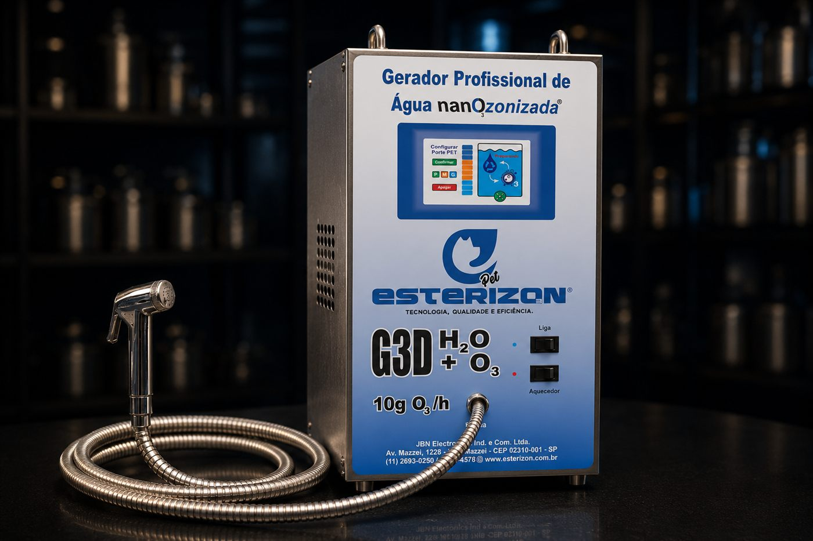

Gerador G3D — Modelo Digital
10g O₃/h · Água nanOzonizada
Gerador profissional de água nanOzonizada com painel digital, direto no banho — mais higiene, menos produto químico.
R$ 6.500,00 parcelado no cartão, ou à vista com 5% de desconto
Ver detalhes →